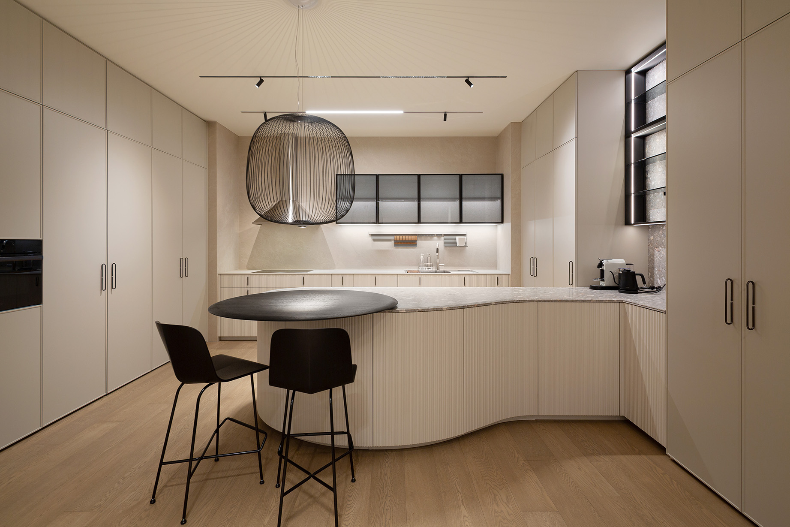
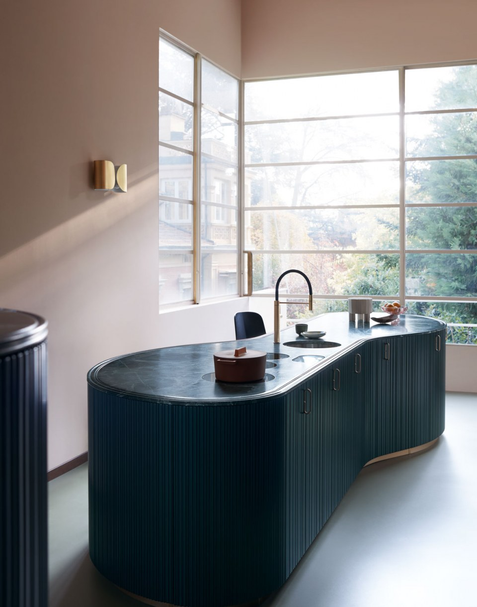
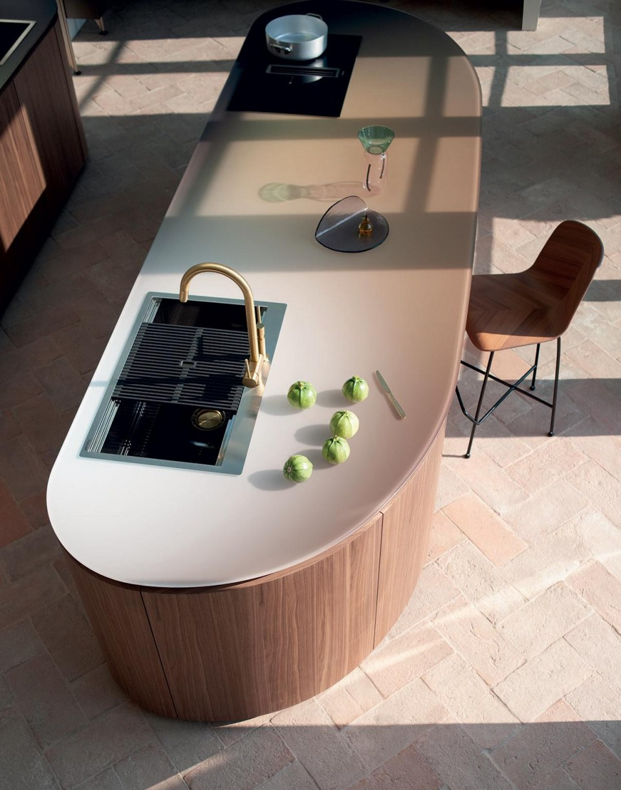

01
Анализ пространства.Смотрим планировку, инженерные точки и свет, чтобы определить оптимальную форму острова и рабочие маршруты.
Tangram
Tangram состоит из пяти изогнутых элементов, которые комбинируются с прямыми модулями и позволяют создавать острова необычной формы, линейные композиции у стены и решения, работающие с углами.
Система спроектирована как гибкий архитектурный инструмент: она подстраивается под пространство и сохраняет цельный визуальный ритм кухни.

Плавность линий можно подчеркнуть декоративным элементом Groove: он формирует рельеф фасада и визуально продолжает профиль ручки.
За счёт этого композиция выглядит цельной, а объём острова воспринимается мягче и легче в интерьере.


Tangram помогает выстраивать кухню как часть общей архитектуры интерьера: задаёт направление движения, поддерживает световые оси и делает пространство более пластичным.
Сценарий может быть разным: компактный остров, большая общественная кухня или композиция с интеграцией в столовую зону.
Анализ пространства.Смотрим планировку, инженерные точки и свет, чтобы определить оптимальную форму острова и рабочие маршруты.
Композиция.Собираем конфигурацию из изогнутых и прямых модулей, уточняем пропорции и посадку техники.
Материалы и детали.Подбираем фасады, столешницы и элемент Groove, чтобы подчеркнуть архитектурный характер системы.
Проект и реализация.Фиксируем проект, согласуем сроки и сопровождаем поставку с монтажом под ваш сценарий жизни.
Обсудить проект Tangram в студии

Приезжайте в Cesar Studio в Москве: покажем материалы, варианты отделок Tangram и разберём вашу планировку на месте.
На встрече подготовим сценарий компоновки и дальнейшие шаги по проекту.